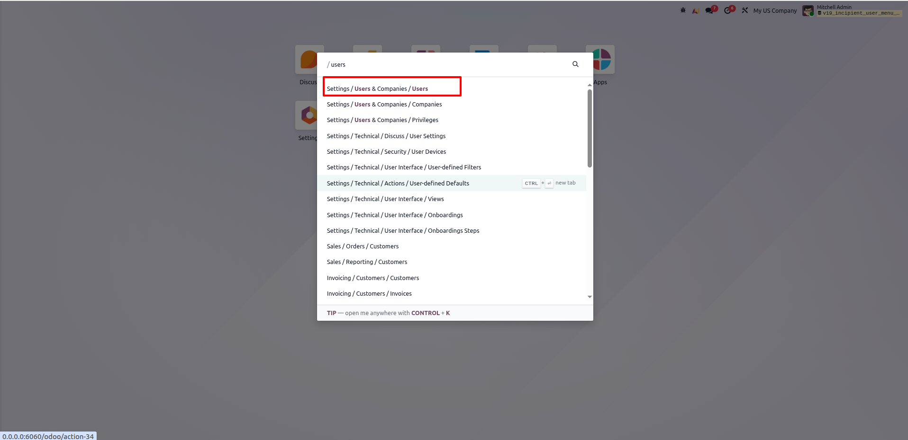
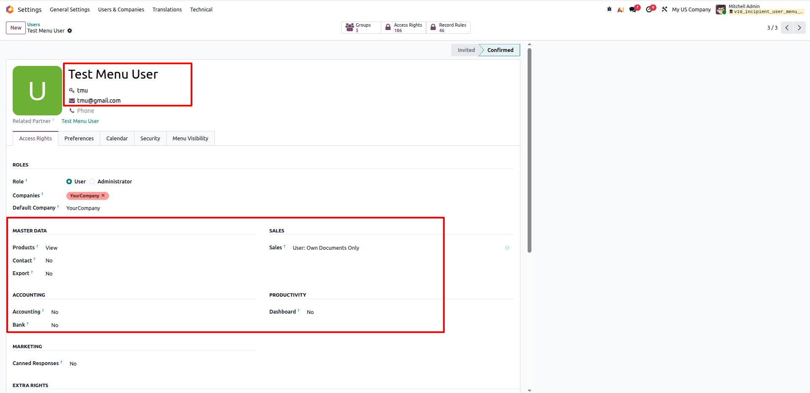
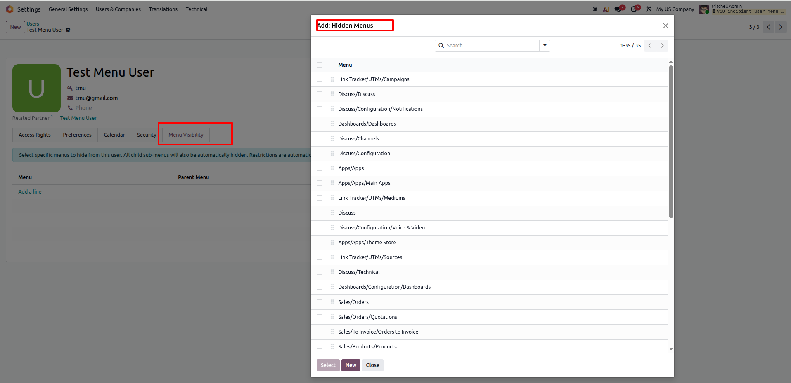
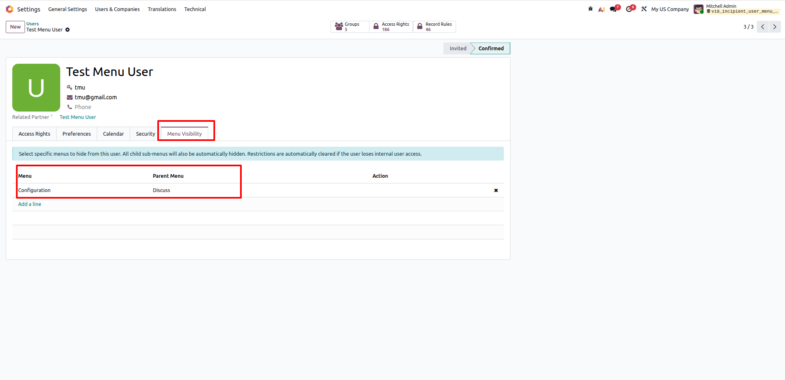
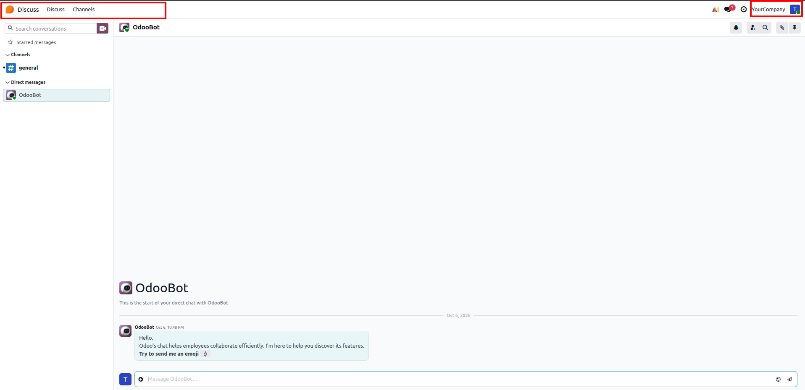
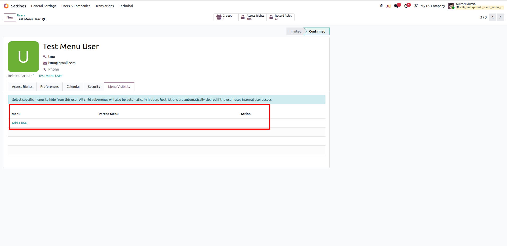
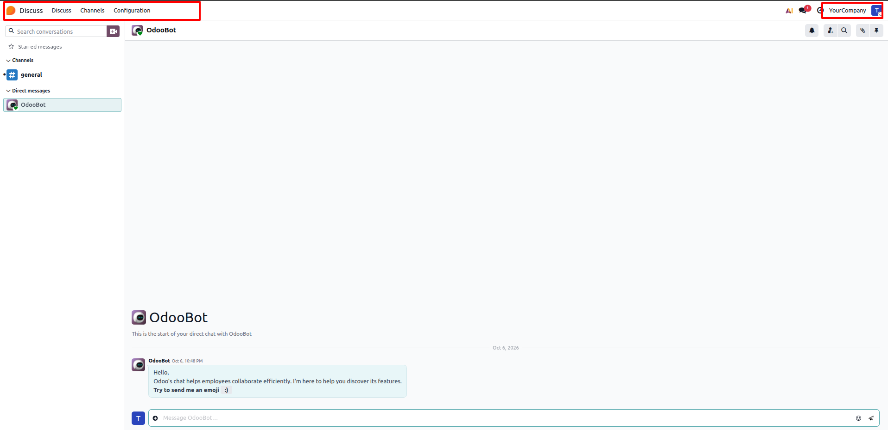

Lets an administrator pick specific menu items to hide from a specific user directly from that user's own form, automatically suppressing all child sub-menus and auto-clearing restrictions when user access changes.
Free pre-sales consultation and lifetime support for every installation.
Contact Technical SupportFiner menu-level control directly from user forms without altering security groups
Configure menu exclusions for individual users directly on their user form, avoiding the need to create redundant, complex security groups.
Hiding any parent or top-level menu automatically hides all of its descendant child sub-menus throughout the web client tree.
Restrictions are automatically cleared if a user loses internal-user access or gets converted to Portal/Public, preventing stale permissions.
How Per-User Menu Visibility Control solves standard Odoo access control limits
12 Core capabilities engineered for precise, user-level menu visibility
Dedicated "Menu Visibility" tab directly placed on the `res.users` form for fast, seamless administrator access.
Selecting a parent menu automatically hides all descendant child sub-menus and actions down the entire navigation hierarchy.
Hidden menu selection domain dynamically calculates only the menus currently visible to that user based on their active groups.
Automatically clears all configured hidden menus if the user loses internal user status or is changed to Portal/Public.
Overrides `_load_menus_blacklist` so restricted items are completely excluded from the browser payload and app switcher.
Automatically invalidates Odoo registry cache on save, ensuring menu visibility changes take effect immediately on next reload.
The Menu Visibility configuration tab is restricted to Administration / Access Rights managers (`base.group_erp_manager`).
Seamlessly extends `_filter_visible_menus` to guarantee consistency across all standard and custom web client views.
Eliminates the maintenance headache of creating dozens of granular, single-purpose security groups for individual exceptions.
Lightweight relational mapping and set-based ID matching ensure zero detectable overhead during user navigation.
100% compatible with Odoo Community Edition, Enterprise Edition, and Odoo.sh cloud deployments.
Pure Odoo framework extension requiring zero external Python libraries or third-party servers.
How Per-User Menu Visibility Control operates in Odoo
As an Administrator, open the Command Palette (CTRL + K) or navigate through Odoo settings to access Settings → Users & Companies → Users.
Quickly locate and open the user profile whose menu access permissions you want to customize.

Open the target user's form view (e.g., Test Menu User) and verify their assigned standard roles and access groups.
Notice the dedicated Menu Visibility notebook tab added to the user form for granular menu management.

Switch to the Menu Visibility tab and click Add a line under the Hidden Menus list.
A popup dynamically displays only the menus currently accessible to this specific user according to their assigned security groups.

Review the selected hidden menus (such as Discuss → Configuration) showing menu name, parent menu, and action details.
Save the record. The module automatically flushes the cache to enforce visibility restrictions immediately.

When the restricted user logs in, the chosen menu and all its child sub-menus are completely excluded from the navigation bar.
As shown, the Configuration menu is completely suppressed from Discuss navigation for this user.

To restore access at any time, simply delete the entry from the Hidden Menus list in the user profile.
Alternatively, if the user type is changed to Portal/Public, restrictions are automatically cleared.

Upon saving and refreshing the user session, the previously hidden menu (e.g., Configuration) instantly reappears.
Provides full lifecycle menu control without touching or altering core security group definitions.

Click any question below to expand or collapse details